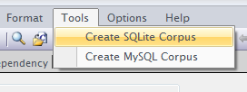
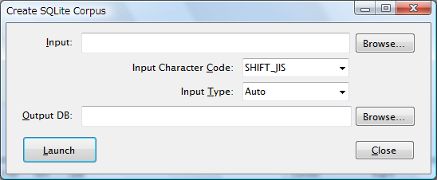
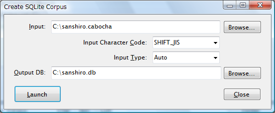
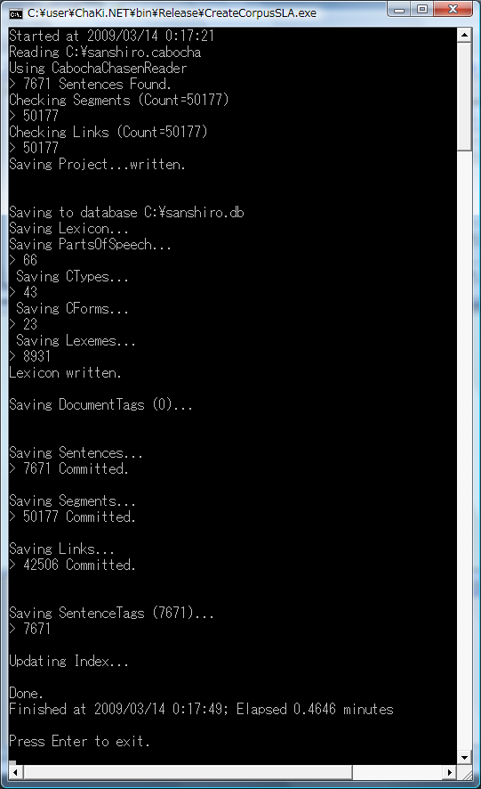

ChaSen・MeCab・!Cabochaファイルのインポート
全自動インポート機能では不足する場合や、既に解析済みのファイルがあって改めて解析を行いたくない場合には、 別のツール(CreateCorpus)を用いて解析済みファイルからコーパスをインポート・作成します。
次にインポートの手順を示します。
まず、"Tools"メニューからコーパス作成コマンドを選択します。 
作成先がSQLiteの場合とその他の場合でコマンドが異なります。もっとも手軽なのは、 SQLiteで、この場合はRDBサーバが不要で通常のファイルにコーパスが作成されます。 一方、データベースを専用サーバで管理したい場合はMySQL等を選択します。 ここでは、SQLite版のデータベースを作成するものとして説明します。メニューからコマンド "Create SQLite Corpus"を選択します。以下のようなダイアログが開きます。

- Input欄に、コーパスソースファイルのファイル名を入力します。
- Input Character Code欄で、コーパスソースファイルの文字エンコード種別を選択します。
- Input Type欄は通常はAutoとしておけば、コーパスソースファイルの種別が自動認識されます。 自動認識がうまく働かない場合のみ、明示的に選択してください。
- Output DB欄に、出力となるSQLite DBファイル名を入力します。既存のファイルは上書きされます。 ファイルの拡張子は、.dbとしてください。

以上の設定後、"Launch"ボタンを押すと、データベース作成が開始されます。経過は別ウィンドウに 表示されます。（このウィンドウはCtrl+"C"を押すことで強制終了できます。）

この経過表示は、インポートの過程を示すもので、以下の処理段階それぞれの進捗を示します。
- コーパスソースファイルの解析
- コーパスソースファイルの種別判定結果
- Sentenceの読み込み
- Segment（ここでは文節）の読み込み・生成
- Linkの読み込み・生成
- デフォルトProjectの生成
- Lexiconの保存（POS, CType, CForm, Lexeme)
- Documentの保存
- Sentenceの保存
- Segmentの保存
- Linkの保存
- SentenceTagの保存
- RDB Indexの更新
"Done."と表示されたら終了です。終了したら、Enterキーを押してウィンドウを閉じます。入力ダイアログはまだ表示されたままですので、 これも"Close"ボタンを押して閉じます。
以上でインポートは完了です。Explorer等でファイルが正しくできていることを確認してください。